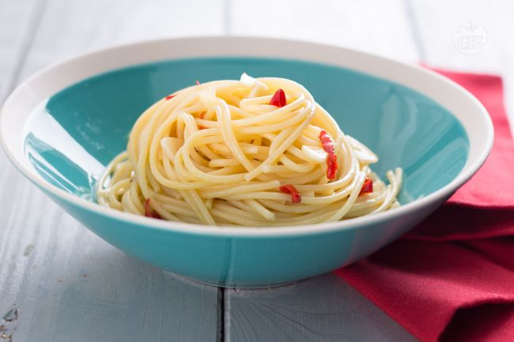

Pasta aglio olio e peperoncino

This late-night Roman staple is astonishingly full-flavored. Start the water before you do anything else, because the sauce takes less than 10 minutes start to finish.
Ingredients
- ¾ pound linguine or spaghetti
- 2 to 3 whole fresh peperoncini (small red chiles), or small dried red chiles
- ⅔ cup extra virgin olive oil
- 4 garlic cloves, thinly sliced
- Salt
- ¼ cup chopped Italian parsley
Preparation
- Put a pot of salted water on to boil. Remove the stems of the peperoncini, halve them lengthwise, then slice them into 1/4-inch lengths. Put the oil, garlic and peperoncini in a large deep pan set over medium-high heat, and cook until the garlic is translucent and golden, 2 to 3 minutes. Add the parsley to the pan, and turn off the heat.
- Meanwhile, cook the pasta until it is aldente, nearly but not quite done and still a bit chalky in the middle. Drain, and reserve 1 cup of the cooking liquid.
- When the oil has cooled for a couple of minutes, add 1/2 cup of the pasta cooking water, and reduce over high heat by about half. Add the pasta, and stir vigorously as it continues to cook. Add the reserved pasta water a bit at a time as necessary to finish cooking the pasta, and develop the thickened sauce. Season with salt, and serve.